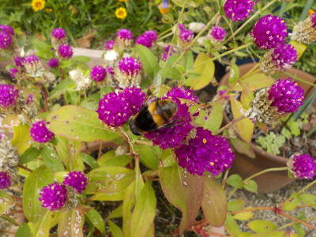
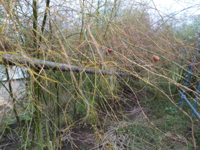
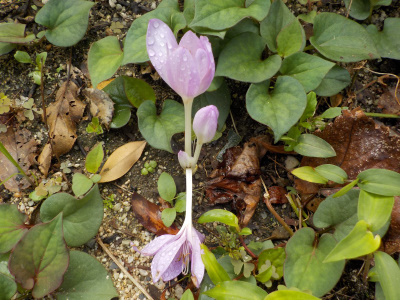
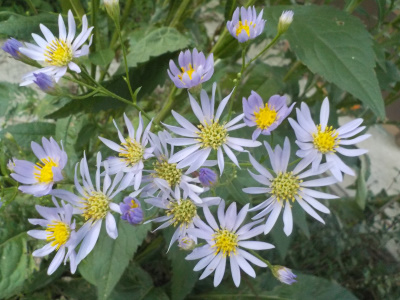
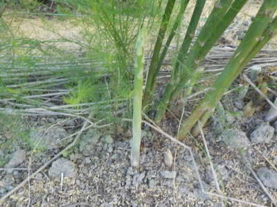

遊びで植物を育てよう
2019/09/29
花に蜂がいたんですが、何て名前でしょう？
蜂がうろうろしていたんですが、名前がわかりません。

ネットの図鑑で調べてもわかりませんでした。
もしかして蜂じゃない？
【9月TOP】
【日記TOP】
【園芸TOP】
2019/09/28
フリージアの球根を植えました。
芽が出てきたのでフリージアの球根をプランターに植えました。

球根がいっぱいあるので間隔少な目に植えましたが、まだいっぱい球根が余っています。
プランターを買うかどうか検討中。小さい鉢でもいいけど、沢山用意するのが面倒だな。
【9月TOP】
【日記TOP】
【園芸TOP】
2019/09/28
アスパラが枯れだしました。
アスパラお疲れ様です。
秋
まだ暖かい日もありますが、もう枯れだしました。
収穫もそろそろ終わりかな。
【9月TOP】
【日記TOP】
【園芸TOP】
2019/09/23
コルチカムの花が咲いていました。
庭の隅で咲いてました。

掘り上げて花を咲かせたりしますが、地植えもいいですね。
【9月TOP】
【日記TOP】
【園芸TOP】
2019/09/14
シオンの花をあちこちで見ます。
背丈が大きいので目立ちますね。

近所の庭先でもよく見る気がします。
こうゆう花って日本人に好かれそうな気がする。
【9月TOP】
【日記TOP】
【園芸TOP】
2019/09/14
アスパラが毎日採れています。
アスパラは美味しいです。

簡単に料理しても美味しいんですが、いつでも簡単に使えると思うと使わずに冷蔵庫の中に入れっぱなしになっています。
【9月TOP】
【日記TOP】
【園芸TOP】
過去の日記
【2024年9月の日記】
【2023年9月の日記】
【2022年9月の日記】
【2021年9月の日記】
【2020年9月の日記】
【2019年9月の日記】
【2018年9月の日記】
【2017年9月の日記】
【2016年9月の日記】
【2015年9月の日記】
【2014年9月の日記】
【2013年9月の日記】
【2012年9月の日記】
【9月TOP】
【日記TOP】
【園芸TOP】
畑仕事じゃないよ。
【おいしいものを食べよう。】【しっかり寝よう。】
【ソロ活をしよう!】【季節感のあることをしよう。】【動画視聴はほどほどに。】【当サイトの全てのコンテンツは無断転載禁止です。】